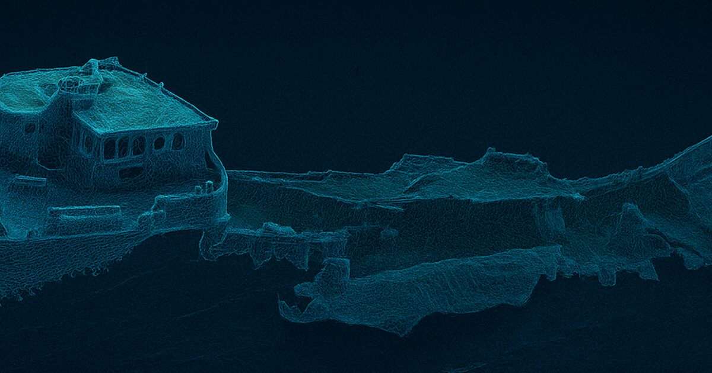

Projecte Thalassa
Digitalització en 3D dels derelictes i del patrimoni submergit de la costa catalana mitjançant fotogrametria submarina. Els models es publiquen de manera oberta i gratuïta per a la recerca, la conservació, la divulgació i la planificació d'immersions.
- 33 models 3D
- 10 zones documentades
El projecte ha tingut ressò a mitjans com 3Cat, el Diari de Tarragona, el Segre o Europa Press, entre d'altres.
Visita el web del projecte Instagram @thalassa.project